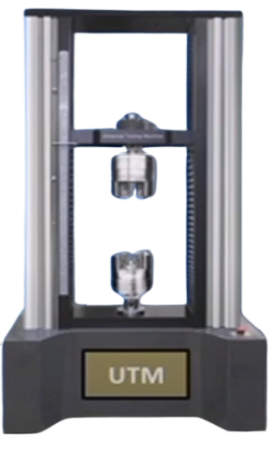
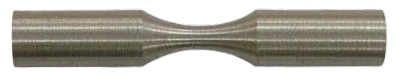
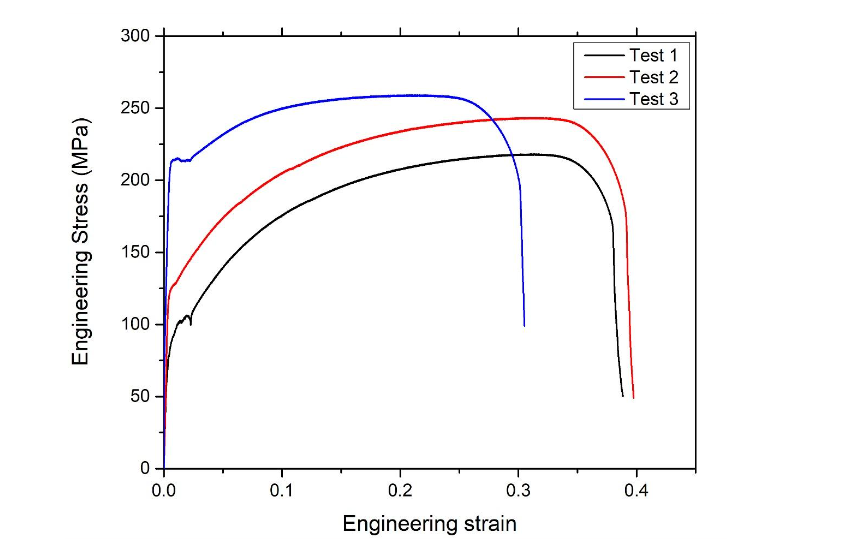

Tools
Instructions

UTM Machine

Mild Steel Sample
Step 1: Placing of the UTM Machine
Drag the UTM Machine from the tools.
Right click on the machine and click on pin.
Step 2: Placing of the sample in the UTM Machine.
Right click on the sample, rotate and drag it close to the furnace machine.
Now,place the sample on the machine & click on pin.
You can adjust zoom level also (Via Mouse Wheel).
Step 3: Start the Test.
Click below buttons to start the machine.
Start Test
Plot
Engineering Strain1
Engineering Stress1
Engineering Strain2
Engineering Stress2
Engineering Strain3
Engineering Stress3
Step 4: Activity.
Click next button to continue.
Step 5: Results
Engineering Stress vs Engineering Strain.

Next
Your browser does not support the HTML5 canvas tag.